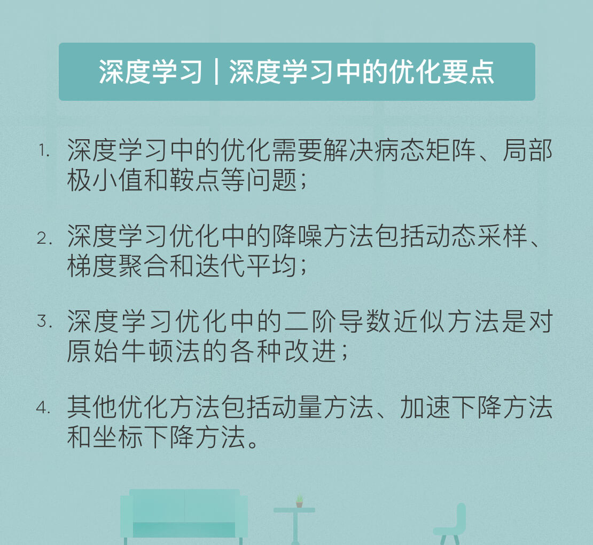

- 00 开篇词 人工智能：新时代的必修课.md.html
- 01 数学基础 九层之台，起于累土：线性代数.md.html
- 02 数学基础 月有阴晴圆缺，此事古难全：概率论.md.html
- 03 数学基础 窥一斑而知全豹：数理统计.md.html
- 04 数学基础 不畏浮云遮望眼：最优化方法.md.html
- 05 数学基础 万物皆数，信息亦然：信息论.md.html
- 06 数学基础 明日黄花迹难寻：形式逻辑.md.html
- 07 机器学习 数山有路，学海无涯：机器学习概论.md.html
- 08 机器学习 简约而不简单：线性回归.md.html
- 09 机器学习 大道至简：朴素贝叶斯方法.md.html
- 10 机器学习 衍化至繁：逻辑回归.md.html
- 11 机器学习 步步为营，有章可循：决策树.md.html
- 12 机器学习 穷则变，变则通：支持向量机.md.html
- 13 机器学习 三个臭皮匠，赛过诸葛亮：集成学习.md.html
- 14 机器学习 物以类聚，人以群分：聚类分析.md.html
- 15 机器学习 好钢用在刀刃上：降维学习.md.html
- 16 人工神经网络 道法自然，久藏玄冥：神经网络的生理学背景.md.html
- 17 人工神经网络 一个青年才俊的意外死亡：神经元与感知器.md.html
- 18 人工神经网络 左手信号，右手误差：多层感知器.md.html
- 19 人工神经网络 各人自扫门前雪：径向基函数神经网络.md.html
- 20 人工神经网络 看不见的手：自组织特征映射.md.html
- 21 人工神经网络 水无至清，人莫至察：模糊神经网络.md.html
- 22 深度学习 空山鸣响，静水流深：深度学习概述.md.html
- 23 深度学习 前方有路，未来可期：深度前馈网络.md.html
- 24 深度学习 小树不修不直溜：深度学习中的正则化.md.html
- 25 深度学习 玉不琢不成器：深度学习中的优化.md.html
- 26 深度学习 空竹里的秘密：自编码器.md.html
- 27 深度学习 困知勉行者勇：深度强化学习.md.html
- 28 深度学习框架下的神经网络 枯木逢春：深度信念网络.md.html
- 29 深度学习框架下的神经网络 见微知著：卷积神经网络.md.html
- 30 深度学习框架下的神经网络 昨日重现：循环神经网络.md.html
- 31 深度学习框架下的神经网络 左右互搏：生成式对抗网络.md.html
- 32 深度学习框架下的神经网络 三重门：长短期记忆网络.md.html
- 33 深度学习之外的人工智能 一图胜千言：概率图模型.md.html
- 34 深度学习之外的人工智能 乌合之众的逆袭：集群智能.md.html
- 35 深度学习之外的人工智能 授人以鱼不如授人以渔：迁移学习.md.html
- 36 深度学习之外的人工智能 滴水藏海：知识图谱.md.html
- 37 应用场景 你是我的眼：计算机视觉.md.html
- 38 应用场景 嘿, Siri：语音处理.md.html
- 39 应用场景 心有灵犀一点通：对话系统.md.html
- 40 应用场景 数字巴别塔：机器翻译.md.html
- 一键到达 人工神经网络复习课.md.html
- 一键到达 应用场景复习课.md.html
- 一键到达 数学基础复习课.md.html
- 一键到达 机器学习复习课.md.html
- 一键到达 深度学习之外的人工智能复习课.md.html
- 一键到达 深度学习复习课.md.html
- 一键到达 深度学习框架下的神经网络复习课.md.html
- 推荐阅读 我与人工智能的故事.md.html
- 新书 《裂变：秒懂人工智能的基础课》.md.html
- 直播回顾 机器学习必备的数学基础.md.html
- 第2季回归 这次我们来聊聊机器学习.md.html
- 结课 溯洄从之，道阻且长.md.html
- 课外谈 “人工智能基础课”之二三闲话.md.html
- （课外辅导）人工神经网络 拓展阅读参考书.md.html
- （课外辅导）数学基础 拓展阅读参考书.md.html
- （课外辅导）机器学习 拓展阅读参考书.md.html
- （课外辅导）深度学习 拓展阅读参考书.md.html
- 捐赠
25 深度学习 玉不琢不成器：深度学习中的优化
除了正则化之外，优化也是深度学习需要解决的一个核心问题。由于深度神经网络中的隐藏层数目较多，因而将整个网络作为一个整体进行优化是非常困难的事情，需要花费大量的时间和计算力。出于效率和精确性的考虑，在深度学习的优化上需要使用专门的技术。
出于可解性的考虑，传统机器学习算法往往会小心翼翼地选择代价函数和优化条件，将待优化问题转化为容易求解的凸优化问题。但在神经网络，尤其是在深度神经网络中，更一般的非凸情况是不可避免的，这就给深度学习中的优化带来很多额外的挑战。
当待优化的代价函数的输入是\(n\)维向量时，其二阶导数就包含针对不同变量分别求偏导所得到的很多分量，将这些分量按顺序排列可以得到Hessian矩阵。而在神经网络的训练中，Hessian矩阵的病态问题非常常见，甚至无论优化问题是否具有凸优化的形式，病态的Hessian矩阵都会出现。
在线性方程\(\\mathbf{A} \\mathbf{x} = \\mathbf{b}\)中，当系数矩阵\(\\mathbf{A}\)的微小扰动会给解集\(\\mathbf{x}\)带来较大幅度的波动时，这样的矩阵就被称为病态矩阵（ill-conditioned matrix）。
病态矩阵是科学计算不愿打交道的对象，因为数值精度导致的不可避免的舍入误差可能会给输出带来巨大的偏离，正所谓“差之毫厘，谬以千里”。在神经网络的训练中，病态矩阵的影响体现在梯度下降的不稳定性上。当应用随机梯度下降解决优化问题时，病态矩阵对输入的敏感性会导致很小的更新步长也会增加代价函数，使学习的速度变得异常缓慢。
深度神经网络面临的另一个挑战是局部极小值的问题。凸优化问题的数学特性保证了局部极小值和全局最小值之间的等价关系。因而在优化一个凸问题时，任何形式的临界点都可以看成是可行解。而在神经网络，尤其是深度模型中，代价函数甚至会具有不可列无限多个局部极小值，这显然会妨碍对全局最小值的寻找，导致搜索陷入局部最优的陷阱中。
神经网络之所以会具有这么多局部极小值，原因在于隐藏变量的不可辨认性。如果将神经网络中的几个隐藏神经元及其所有系数调换的话，得到的新模型和原始模型之间是等价的。假定深度模型中包含\(m\)个隐藏层，每个层中又都有\(n\)个神经元，那么隐藏单元的排列方式就会多达\((n!) ^ m\)种。这么多神经网络的变体是没法相互区分的，因而它们都有相同的局部极小值。
除了局部极小值外，另一类在优化中不受欢迎的点叫做鞍点（saddle point）。鞍点是梯度为0的临界点，但它既不是极大值也不是极小值。从函数图像上看，多变量函数的鞍点在一个方向上向上弯曲，在另一个方向上则向下弯曲，从而形成了类似马鞍的形状。由于牛顿法的目标是寻找梯度为零的临界点，因而会受鞍点的影响较大，高维空间中鞍点数目的激增就会严重限制牛顿法的性能。
虽然存在着这样那样的潜在问题，但深度学习采用的依然是传统优化方法及其改进，这是由于隐藏层的未知特性使设计有针对性的优化方法变得非常困难。随机梯度下降法（stochastic gradient descent）就是在传统机器学习和深度神经网络中都能发挥作用的经典算法。
机器学习中的最优化是令给定的期望风险函数最小化，而期望风险又可以用训练集上的经验风险\(Q(w)\)代替。训练集上的经验风险等于所有样本风险函数\(Q_i(w)\)的均值。当训练集的数据量较大，并且经验风险又难以用简单的解析式来表示时，计算所有梯度的求和就会变成一个复杂的计算任务，消耗大量的计算资源。
随机梯度下降法是原始梯度下降法的一种改良。如果把求解最优化问题想象成爬山，那么随机梯度下降法就是每走一步就换个方向。为了节省每次迭代的计算成本，随机梯度下降在每一次迭代中都使用训练数据集的一个较小子集来求解梯度的均值，这在大规模机器学习问题中，特别是深度学习中非常有效。在给定学习率\(\\eta\)和前一轮的参数估计值\(w\)时，随机梯度下降法的每一轮迭代执行以下操作
从训练集中随机抽取\(n\)个样本，在这个样本子集上计算梯度估计值\(\\dfrac{1}{n} \\sum\\limits_{i = 1}^n \\nabla_w Q_i(w)\)
根据计算出的结果更新参数\(w \\leftarrow w - \\eta \\cdot \\dfrac{1}{n} \\sum\\limits_{i = 1}^n \\nabla_w Q_i(w)\)
以上迭代过程一直重复到\(Q(w)\)取得最小值或迭代次数达到最大值为止。学习率\(\\eta\)是随机梯度下降法中的重要参数，它通常被设置为随着训练次数的增加而逐渐减小。这一选择体现的是训练时间和优化性能之间的折中。
相对于让所有训练样本的风险函数最小化的原始梯度下降法，随机梯度下降是让每几个样本的风险函数最小化，虽然不是每次迭代得到的结果都指向全局最优方向，但大方向终归是没有错的，其最终的结果往往也在全局最优解附近。在随机梯度下降法的基础上进行改进可以得到其他的优化方式，改进的手段主要有两种：一种是随机降低噪声，另一种是使用二阶导数近似。
在应用中，随机梯度下降会受到噪声的影响。当学习率固定时，噪声会阻止算法的收敛；而当学习率逐渐衰减时，噪声也会将收敛速度压低到次线性水平。降噪方法正是为了抑制噪声的影响应运而生，降噪的方式既包括提升单次梯度估计的精度，也包括提升迭代过程的精度，常用的算法包括动态采样、梯度聚合和迭代平均三类。
动态采样和梯度聚合两类方法是通过使用固定的步长来获得线性的收敛速度，进而实现降噪。动态采样方法通过逐渐增加梯度计算中使用的子集容量来实现降噪，随着优化过程的进行，基于更多样本得到的梯度估计也就越来越精确。梯度聚合方法则将先前迭代中得到的梯度估计存储下来，并在每次迭代中对这些估计中的一个或多个进行更新，再通过将搜索方向定义为之前轮次中梯度估计的加权平均，来改善搜索方向的准确性。
和前面两种方法相比，迭代平均方法不是通过对梯度估计求平均，而是对每次迭代得到的参数结果求平均来实现降噪。迭代平均方法可以在保证算法收敛性的前提下提升学习率，从而缩短收敛时间。这种方法在思想上更接近原始的随机梯度下降法，虽然它的收敛速度依然保持在次线性水平，却可以降低结果的方差，从而有效地对抗过拟合问题。
前面三类方法的作用都是降低噪声的影响。要提升随机梯度下降法的性能，还可以通过使用二阶导数近似的信息来抑制高度非线性和病态目标函数的不利影响。在梯度下降法中应用的一阶导数不具有线性不变性，二阶导数的引入可以解决这一问题。另一方面，使用二阶导数意味着在使用泰勒展开近似目标函数时，二阶项的引入可以加快对最值点的逼近。总而言之，二阶导数近似方法主要的优势在于提升收敛速度。
二阶导数近似方法都可以看成对传统的牛顿法的改进，具体方法包括拟牛顿法、高斯牛顿法和无Hessian牛顿法等，受篇幅限制，在此就不做展开介绍了。
除了随机降噪和二阶导数近似这两大类主要方法之外，还有一些自立门户的算法也能够对随机梯度下降做出改进，典型的例子包括动量方法（momentum）、加速下降方法（accelerated gradient descent）和坐标下降方法（coordinate descent）。
动量方法引入了超参数\(v\)作为速度，它代表参数在参数空间上移动的方向和速率，移动参数的力则是负梯度。速度\(v\)的引入就会让之前的移动产生累加效应，累加的效果则体现在学习率上。如果参数在一个下降较快的方向上移动，那么就迈开大步向前冲，对应着学习率的增加；如果参数在忽左忽右地兜圈子，那就找一条中间路线向前走。这样一来，算法就不太会陷入到局部最优中而无法抽身了。
加速下降法是由俄罗斯数学家尤里·涅斯捷罗夫发明的，因而常以他的名字来命名。加速下降法的思想与标准动量方法类似，唯一的区别在于加速下降法对动量的计算是在施加当前速度之后才进行的。计算出基于之前的更新得到的动量\(v\)后，加速下降法先将参数\(w\)临时更新为\(w + v\)，再在\(w + v\)上计算梯度。与标准动量方法相比，加速下降法可以避免过快更新，因而稳定性更好。
在很多情况下，“分而治之”是解决优化问题的高效方法，坐标下降法体现的就是这种思想。当优化问题中存在多个自变量时，坐标下降法先保持其他变量不变，针对单一变量\(x_1\)最小化\(f(\\mathbf{x})\)，再针对单一变量\(x_2\)最小化，依此类推，直到所有变量循环完成。为了保证对单一变量的优化能够达到全局优化的效果，待优化的目标函数最好是个凸函数，还可以添加\(L ^ 1\)范数的正则化项。此外，每轮优化中随机选取单一变量也可以取得较好的效果。
深度学习中的优化问题是个复杂的问题，新的优化方法也在不断出现。但我希望能在这些乱花渐欲迷人眼的方法背后，帮你理解它们背后共性的设计准则。
今天我和你分享了深度学习中实现优化的思路，其要点如下：
深度学习中的优化需要解决病态矩阵、局部极小值和鞍点等问题；
深度学习优化中的降噪方法包括动态采样、梯度聚合和迭代平均；
深度学习优化中的二阶导数近似方法是对原始牛顿法的各种改进；
其他优化方法包括动量方法、加速下降方法和坐标下降方法。
既然优化方法包含不同的切入角度，那么你觉得哪一种优化方法可能具有更好的效果呢？
欢迎发表你的观点。

© 2019 - 2023 Liangliang Lee. Powered by gin and hexo-theme-book.